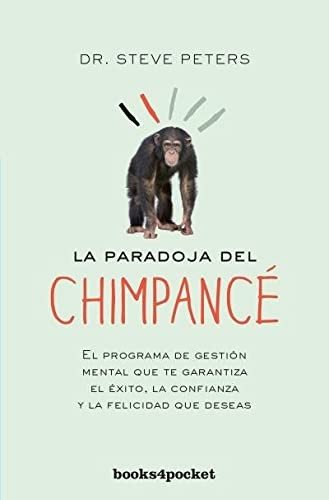
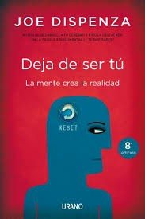

Libros de hábitos, disciplina y modificación de conducta
Libros de hábitos, disciplina y modificación de conducta en español: 7 libros completos para leer gratis aquí mismo y 13 fichas de títulos actuales.
Psicología de los hábitosDisciplina personalAutodisciplinaFuerza de voluntadRutinas diariasPersistencia conductualCondicionamiento clásicoCondicionamiento operanteAprendizaje por observaciónRecompensas y castigosFormación de hábitosAutocontrolCambio de hábitosAutomatización de la conductaDiseño del entorno conductualIntenciones de implementaciónFormación de rutinasProcrastinaciónEvitación conductual
Autocuidado: Hábitos disfuncionales en la relación profesional/familiaMartínez, José Manuel; Ratón Berlanga, Marta; Soria-Oliver, María; García Sánchez, Rubén; López, Jorge S.; Martín López, María Jesús
Autocuidado: Hábitos disfuncionales en la relación profesional/familiaMartínez, José Manuel; Ratón Berlanga, Marta; Soria-Oliver, María; García Sánchez, Rubén; López, Jorge S.; Martín López, María JesúsReglas y consejos sobre investigación científica (Los tónicos de la voluntad)Santiago Ramón y Cajal
Reglas y consejos sobre investigación científica (Los tónicos de la voluntad)Santiago Ramón y CajalAnálisis funcional "Modelo SORCK" TeoríaKrieger, Virginia; Muñoz Cano, Dámaris; Magallón Neri, Ernesto Mijail; Amador, Juan Antonio
Análisis funcional "Modelo SORCK" TeoríaKrieger, Virginia; Muñoz Cano, Dámaris; Magallón Neri, Ernesto Mijail; Amador, Juan AntonioLos procesos de aprendizaje y motivaciónCarmelo P. Cubillas
Los procesos de aprendizaje y motivaciónCarmelo P. CubillasMotivación y emoción. Módulo 1: MotivaciónJoaquín T. Limonero, Maria Álvarez Moleiro, Tatiana Rovira
Motivación y emoción. Módulo 1: MotivaciónJoaquín T. Limonero, Maria Álvarez Moleiro, Tatiana RoviraIntroducción a la psicofísicaAznar Casanova, José Antonio
Introducción a la psicofísicaAznar Casanova, José AntonioAyúdate!: (self-help) con ejemplos sobre el caracter, la conducta y la ...Samuel Smiles , Emilio Augusto Soulère
Ayúdate!: (self-help) con ejemplos sobre el caracter, la conducta y la ...Samuel Smiles , Emilio Augusto SoulèreEl club de las 5 de la mañanaRobin Sharma
El club de las 5 de la mañanaRobin SharmaPiensa como un monjeJay Shetty
Piensa como un monjeJay ShettyLa paradoja del chimpancéSteve Peters
La paradoja del chimpancéSteve Peters
El libro de las pequeñas revolucionesElsa Punset
El libro de las pequeñas revolucionesElsa PunsetEnCambioEstanislao Bachrach
EnCambioEstanislao BachrachDeja de ser túJoe Dispenza
Deja de ser túJoe Dispenza
Los 7 hábitos de los adolescentes altamente efectivosSean Covey
Los 7 hábitos de los adolescentes altamente efectivosSean CoveyEl monje que vendió su FerrariRobin S. Sharma
El monje que vendió su FerrariRobin S. SharmaLos 7 hábitos de la gente altamente efectivaStephen R. Covey
Los 7 hábitos de la gente altamente efectivaStephen R. CoveyEl vendedor más grande del mundoOg Mandino
El vendedor más grande del mundoOg MandinoEl poder de los hábitosCharles Duhigg
El poder de los hábitosCharles DuhiggHábitos atómicosJames Clear
Hábitos atómicosJames ClearTráguese ese sapoBrian Tracy
Tráguese ese sapoBrian TracyTemas relacionados
¿Estás eligiendo carrera?
Haz gratis el test de orientación vocacional de AURZANE: intereses, aptitudes, autoconcepto y hábitos de estudio, con informe completo.